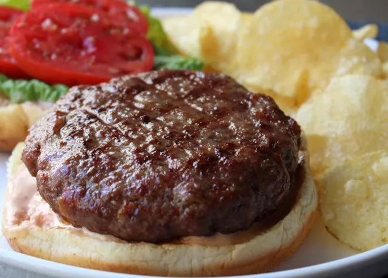

Odin Recipes
Burger

Description
This burger combines three foods we love — burgers, bacon, and meatloaf sandwiches — into one incredible burger that's juicy, tender, and tasty. These burgers work great either pan-seared or cooked on the grill. Chef John serves his bacon meatloaf burger on a grilled bun with lettuce, tomato, and a smear of secret sauce (mayo, mustard, and ketchup). "I'll make a meatloaf just for the leftovers," says Chef John. "I'll fry the cold slice in a buttered pan until hot and crusty, and enjoy it on toast with ketchup. This recipe is basically that, plus bacon, in burger form."
Ingredients
- 1 large egg, beaten
- 1 tablespoon ketchup
- 2 teaspoons Worcestershire sauce
- 1 teaspoon salt
- 1 teaspoon freshly ground black pepper
- 1 teaspoon brown sugar
- 1/2 teaspoon onion powder
- 1/4 teaspoon garlic powder
- pinch dried thyme
- cayenne pepper to taste
- 1/4 cup plain bread crumbs
- 1/4 cup plain bread crumbs
- 2/3 cup chopped cooked bacon
- 1 pound ground chuck beef (85% lean)
Steps
- Whisk egg, ketchup, Worcestershire sauce, salt, brown sugar, onion powder, garlic powder, thyme, and cayenne pepper together in a bowl. Add breadcrumbs and chopped cooked bacon. Crumble in the ground beef. Mix with your fingers until bacon and breadcrumbs are distributed evenly.
- Form mixture into 4 burgers with your wet hands. Cover with plastic wrap and refrigerate until chilled thoroughly, about 3 hours.
- Preheat an outdoor grill for medium-high heat and lightly oil the grate.
- Place burgers on the grate and cook, turing occasionally, until firm and cooked to your desired doneness. An instant-read thermometer inserted into the center should read between 145 and 150 degrees F (63 degrees C). Let burgers rest for a few minutes before serving.